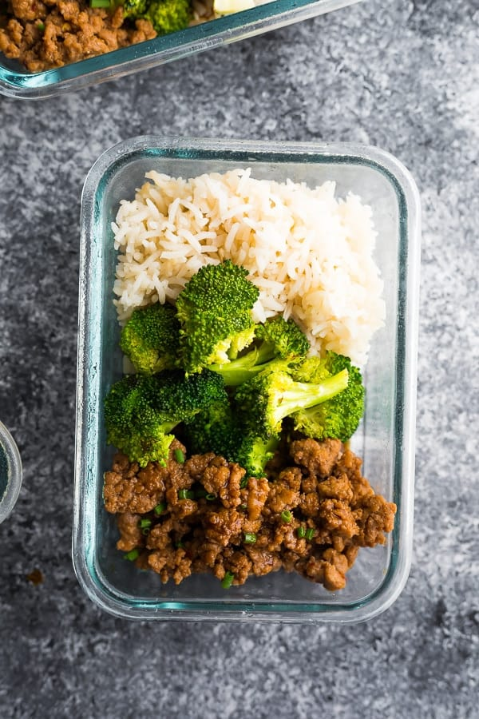

Description
These ground turkey meal prep bowls have a delicious Korean-inspired sauce! Packed with flavor and under 400 calories per bowl, you can prep this recipe on the weekend for healthy and delicious lunches through the week.
Ingredients
- mashed tofu
- soy sauce
- honey
- red pepper flakes
- rice
- broccoli
Steps
- Shake up sauce- You'll want to mix up the sauce before you begin cooking. In a small jar, add honey, soy sauce, sesame oil, red pepper flakes, and black pepper. Shake it up, then set aside.
- Cook turkey- Heat a non stick pan over medium heat. Add the ground turkey to the pan, and cook for 7-10 minutes, stirring and breaking it up with a spatula.
- Garlic & ginger- When turkey is cooked through and no pink remains, make a space in the middle of the pan. Add the minced garlic and ginger, and cook, stirring a bit, for 1 minute. Then mix it right into the ground turkey.
- Sauce it up- Shake the sauce back up, then pour it evenly over the turkey. Let it cook for 1-2 minutes until bubbly and everything is coated in the sauce.
- Portion out- Portion out the ground turkey + sauce into 2 cup or larger meal prep containers with steamed broccoli and rice. Refrigerate for up to 4 days, and heat it up until steaming hot in the microwave to serve.